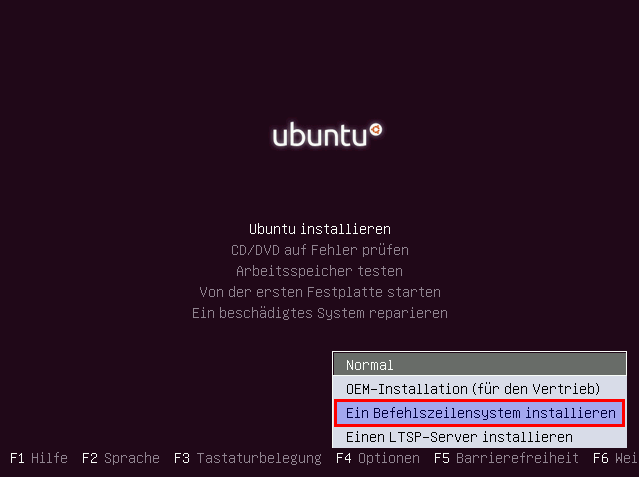

Minimalinstallation
Dieser Artikel wurde für die folgenden Ubuntu-Versionen getestet:
Ubuntu 16.04 Xenial Xerus
Ubuntu 14.04 Trusty Tahr
Zum Verständnis dieses Artikels sind folgende Seiten hilfreich:
 Dieser Artikel beschreibt die Installation eines Ubuntu-Systems, das ausschließlich einen nicht-grafischen Textmodus anbietet. Diese Installation funktioniert auch auf älteren, nicht so leistungsfähigen Computern, insbesondere auf solchen mit wenig Arbeitsspeicher (ab 128 MiB RAM). Das so installierte Grundsystem wird ohne grafische Oberfläche ca. 1 GiB auf der Festplatte benötigen.
Dieser Artikel beschreibt die Installation eines Ubuntu-Systems, das ausschließlich einen nicht-grafischen Textmodus anbietet. Diese Installation funktioniert auch auf älteren, nicht so leistungsfähigen Computern, insbesondere auf solchen mit wenig Arbeitsspeicher (ab 128 MiB RAM). Das so installierte Grundsystem wird ohne grafische Oberfläche ca. 1 GiB auf der Festplatte benötigen.
Beachten muss man allerdings gerade bei älteren Computern, ob der jeweilige Prozessor (CPU) noch unterstützt wird (siehe Alte Hardware).
Voraussetzungen¶
Um ein Minimalsystem zusammen zu bauen, gibt es mehrere Möglichkeiten:
Installation via Alternate-CD. Diese wird ab Ubuntu 12.10 nur noch für Lubuntu angeboten.
Installation via Server-CD
Installation über eine bestehende Internetverbindung (Netzwerkinstallation).
Die erforderlichen ISO-Abbilder sind über die Artikel Downloads oder Downloads/Netzwerkinstallation zu finden. Wer statt eines optischen Datenträgers einen USB-Stick einsetzen möchte, liest im Artikel Live-USB weiter.
Booten und Installieren¶
Im Folgenden wird der Vorgang exemplarisch am Beispiel der Alternate-CD beschrieben.
Alternate-CD¶
Nachdem von der Alternate-CD gebootet wurde, erscheint dieser Splash-Screen:

Wenn der Punkt "Ubuntu installieren" ausgewählt ist, muss man F4 drücken und dort dann "Ein Befehlszeilensystem installieren" auswählen. Anschließend kann man die Auswahl "Ubuntu installieren" mit ⏎ bestätigen.
Die Installation selbst erfolgt im Textmodus. Schritt für Schritt werden die erforderlichen Mindestangaben wie z.B.:
Tastaturauswahl
Netzwerk-Konfiguration
Root-Kenntwort
Anlegen eines Benutzers
Partitionierung des Datenträgers
Ort des Bootmanagers und
Systemzeit (UTC oder lokal)
abgefragt und das Basissystem in Form des Pakets ubuntu-minimal eingespielt.
System anpassen¶
Textmodus¶
Für die Arbeit auf der Konsole [3] sind einige Grundkenntnisse [4] eine große Hilfe. Insbesondere das Wissen um die Verwendung von Pipes mit more oder less hilft, die Übersicht bei überlangen Ausgaben zu wahren. Aber auch die anderen Komfortfunktionen  sind eine nützliche Hilfe.
sind eine nützliche Hilfe.
Bevor man sich nun auf die Suche nach geeigneten Anwendungen macht, noch ein paar Tipps:
Ein Netzwerkmanager für die Kommandozeile ist im Paket wicd-curses enthalten. Insbesondere WLAN-Nutzer finden dort alles Notwendige.
Ein Terminal-Multiplexer ersetzt einen tiling-fähigen Fenstermanager und ermöglicht auf der Konsole eine effektive Platznutzung bei hohen Bildschirmauflösungen
Mit Hilfe von gpm lässt sich auch eine Maus bzw. ein Touchpad nutzen
Bei Dateioperationen ist ein Papierkorb empfehlenswert: trash-cli
Ein Ubuntu-System im Textmodus ergibt ohne konkrete Anwendungen wenig Sinn. Eine Programmübersicht bietet der Artikel Shell/Anwendungen.
Grafikmodus¶
Wie man sich eine eigene grafische Arbeitsumgebung schaffen kann, wird im Artikel Eigene Desktopumgebung beschrieben.
 Übersichtsartikel
Übersichtsartikel
- Erstellt mit Inyoka
-
 2004 – 2017 ubuntuusers.de • Einige Rechte vorbehalten
2004 – 2017 ubuntuusers.de • Einige Rechte vorbehalten
Lizenz • Kontakt • Datenschutz • Impressum • Serverstatus -
Serverhousing gespendet von